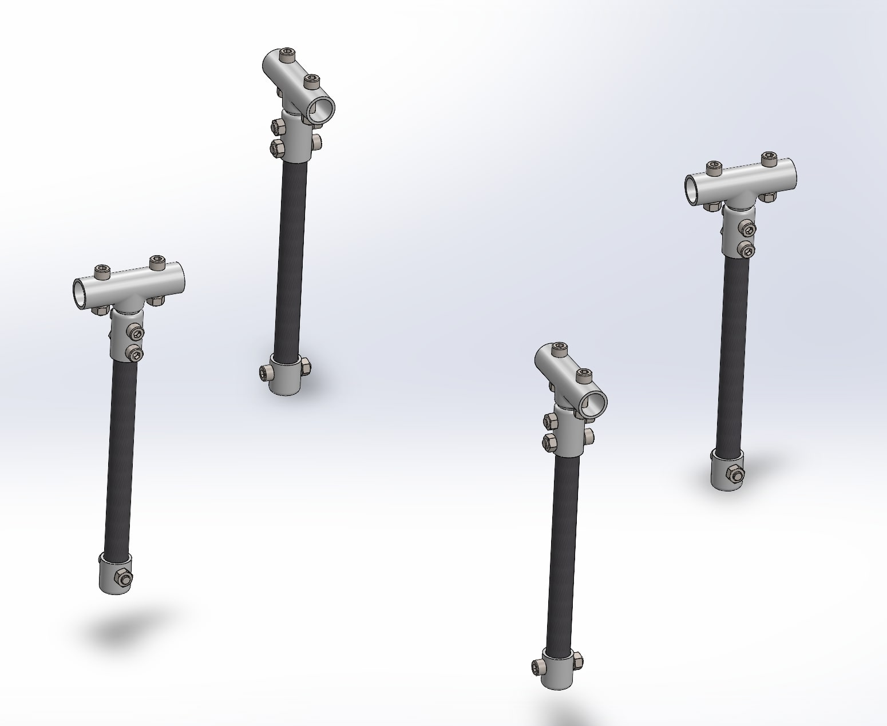

Waterloo Aerial Robotics Group
Mechanical Project Manager
- Managed design of key drone components including dual-axis camera gimbal, landing gear, and various electronics cases
- Designed casing for custom lithium ion battery pack
- Vacuum infused carbon fibre panels for frame of 14 kg drone
Mechanical Team Member
- Designed drone casing for various PCBs and landing gear in Solidworks
- Machined and assembled fuselage and wings for fixed-wing airplane by milling aluminum, laser cutting wooden ribs, and applying ultracote for light wing skin
- Performed wet carbon fibre layup for drone side panels
- Designed IR camera and Raspberry Pi mount for existing frame, with rubber grommets to be friction fit onto drone
- Aided in assembly of 3.8 kg fixed wing plane by wrapping wings in ultracote, modifying landing gear, and harnessing electronics

H2Ontario - Laborer
- General work at Pumping Station in Waterloo, Wastewater Treatment Plant in St Marys, and Water Treatment Plant in Port Dover
- Fused HDPE pipe system over 200 ft long, providing temporary bypass of plant's headworks building and aided in construction of steel piping system for flocculation tanks
- Used Leica Total Station to layout road marks, curbs, hydro, and building components, as well as estimate volumes of dirt piles
- Used drone for site photography and to get images of rooftop layouts
- Filled air filter tank with 93 000 kg of media, worked on PVC pipe humidifier system for filter